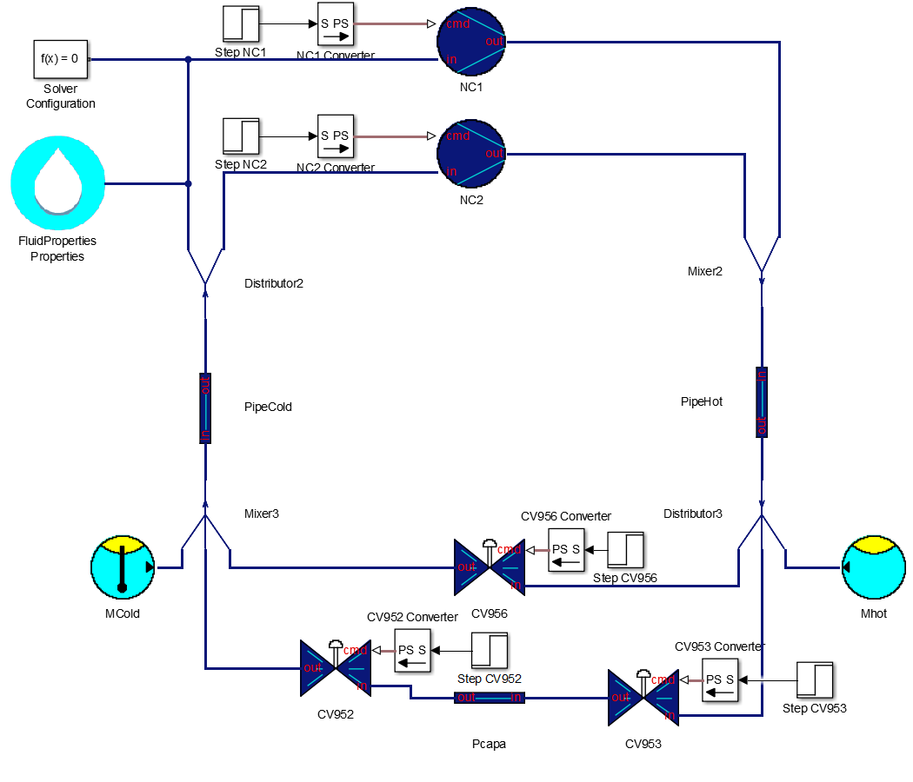

1. Station of compression 
a. Description
The compression station is a sub-system that provides work
to the gas you want to cool down.
This one is composed of :
- Two compressors : NC1 and NC2
- Three valves : CV952, CV953 CV956
- Three pipes : PipeHot, PipeCold and Pcapa
The cold input (Mcold) is represented by a source of mass
flow and temperature whereas the hot output (Mhot) is
represented by a source of mass flow.
b. Simulation
Here is the set of parameters that you could use for the
simulation :
Compressor
Compressor NC1 and NC2 have the same parameters :
- Constant of the compressor = 0.0014
- Minimum compressor control = 0
- Maximum compressor control = 60
Valve CV952
- Valve constant = 3.2
- Xt = 0.72
- Rv = 18
- Minimum allowed = 0
- Maximum allowed = 100
Valve CV953
- Valve constant = 3.2
- Xt = 0.72
- Rv = 18
- Minimum allowed = 0
- Maximum allowed = 100
Valve CV956
- Valve constant = 3.2
- Xt = 0.72
- Rv = 18
- Minimum allowed = 0
- Maximum allowed = 100
PipeCold
- Volume of the pipe = 0.2 m^3
- Ideal1/0 = 1
- Initial pressure = 1.05 bar
- Initial temperature = 70 K
PipeHot
- Volume of the pipe = 1.5 m^3
- Ideal1/0 = 1
- Initial pressure = 16 bar
- Initial temperature = 300 K
Pcapa
- Volume of the pipe = 1 m^3
- Ideal1/0 = 1
- Initial pressure = 8.525 bar
- Initial temperature = 185 K
Mcold et Mhot
Mcold = Mhot = 0.06kg/m^3.
For the temperature of the M/TCold source, it's the
same than the cold pipe, ie 70 K

Remember to choose the solver ode15s, and if you want to use
sscexplore, set the 'Log simulation data' to 'all' in the
parameter configuration panel.
©2015 The PI-02